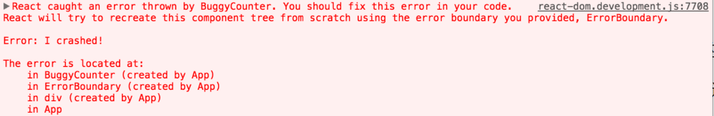

说说你在React项目是如何捕获错误的？
参考答案
一、是什么
错误在我们日常编写代码是非常常见的
举个例子，在react项目中去编写组件内JavaScript代码错误会导致 React 的内部状态被破坏，导致整个应用崩溃，这是不应该出现的现象
作为一个框架，react也有自身对于错误的处理的解决方案
二、如何做
为了解决出现的错误导致整个应用崩溃的问题，react16引用了错误边界新的概念
错误边界是一种 React 组件，这种组件可以捕获发生在其子组件树任何位置的 JavaScript 错误，并打印这些错误，同时展示降级 UI，而并不会渲染那些发生崩溃的子组件树
错误边界在渲染期间、生命周期方法和整个组件树的构造函数中捕获错误
形成错误边界组件的两个条件：
- 使用了 static getDerivedStateFromError()
- 使用了 componentDidCatch()
抛出错误后，请使用 static getDerivedStateFromError() 渲染备用 UI ，使用 componentDidCatch() 打印错误信息，如下：
class ErrorBoundary extends React.Component {
constructor(props) {
super(props);
this.state = { hasError: false };
}
static getDerivedStateFromError(error) {
// 更新 state 使下一次渲染能够显示降级后的 UI
return { hasError: true };
}
componentDidCatch(error, errorInfo) {
// 你同样可以将错误日志上报给服务器
logErrorToMyService(error, errorInfo);
}
render() {
if (this.state.hasError) {
// 你可以自定义降级后的 UI 并渲染
return <h1>Something went wrong.</h1>;
}
return this.props.children;
}
}然后就可以把自身组件的作为错误边界的子组件，如下：
<ErrorBoundary>
<MyWidget />
</ErrorBoundary>下面这些情况无法捕获到异常：
- 事件处理
- 异步代码
- 服务端渲染
- 自身抛出来的错误
在react 16版本之后，会把渲染期间发生的所有错误打印到控制台
除了错误信息和 JavaScript 栈外，React 16 还提供了组件栈追踪。现在你可以准确地查看发生在组件树内的错误信息：

可以看到在错误信息下方文字中存在一个组件栈，便于我们追踪错误
对于错误边界无法捕获的异常，如事件处理过程中发生问题并不会捕获到，是因为其不会在渲染期间触发，并不会导致渲染时候问题
这种情况可以使用js的try...catch...语法，如下：
class MyComponent extends React.Component {
constructor(props) {
super(props);
this.state = { error: null };
this.handleClick = this.handleClick.bind(this);
}
handleClick() {
try {
// 执行操作，如有错误则会抛出
} catch (error) {
this.setState({ error });
}
}
render() {
if (this.state.error) {
return <h1>Caught an error.</h1>
}
return <button onClick={this.handleClick}>Click Me</button>
}
}除此之外还可以通过监听onerror事件
window.addEventListener('error', function(event) { ... })在 React 项目中，捕获错误是一个重要的任务，以确保应用在运行时能够处理异常情况，并提供良好的用户体验。React 提供了多种机制来捕获和处理错误。
以下是如何在 React 项目中捕获错误的主要方法：
1. 错误边界（Error Boundaries）
1.1 定义
- 错误边界：React 16 引入的概念，用于捕获渲染过程中、生命周期方法中的错误。错误边界是一个 React 组件，它可以捕获其子组件树中的 JavaScript 错误，并显示备用 UI。
1.2 实现
- 创建错误边界组件：实现
componentDidCatch和static getDerivedStateFromError生命周期方法来处理错误。 - 示例：
```javascript<br> import React from 'react';
class ErrorBoundary extends React.Component {<br> constructor(props) {<br> super(props);<br> this.state = { hasError: false };<br> }
static getDerivedStateFromError() {<br> // 更新状态以便下一个渲染可以显示降级 UI<br> return { hasError: true };<br> }
componentDidCatch(error, info) {<br> // 你可以将错误日志记录到远程服务器<br> console.error("Error caught by ErrorBoundary:", error, info);<br> }
render() {<br> if (this.state.hasError) {<br> // 渲染降级 UI<br> return <h1>Something went wrong.</h1>;<br> }
return this.props.children; <br> }<br> }
// 使用错误边界<br> function App() {<br> return (<br> <ErrorBoundary><br> <MyComponent /><br> </ErrorBoundary><br> );<br> }<br> ```
2. 捕获异步代码中的错误
2.1 使用 try-catch 语句
- 定义：在异步操作中使用
try-catch语句来捕获和处理错误。 - 示例：
``javascript<br> async function fetchData() {<br> try {<br> const response = await fetch('https://api.example.com/data');<br> if (!response.ok) {<br> throw new Error('Network response was not ok');<br> }<br> const data = await response.json();<br> // 处理数据<br> } catch (error) {<br> console.error('Fetch error:', error);<br> // 处理错误<br> }<br> }<br> ``
2.2 使用 Promise.catch
- 定义：在使用
Promise时，使用.catch方法来捕获错误。 - 示例：
``javascript<br> fetch('https://api.example.com/data')<br> .then(response => {<br> if (!response.ok) {<br> throw new Error('Network response was not ok');<br> }<br> return response.json();<br> })<br> .then(data => {<br> // 处理数据<br> })<br> .catch(error => {<br> console.error('Fetch error:', error);<br> // 处理错误<br> });<br> ``
3. 全局错误处理
3.1 使用 window.onerror
- 定义：通过
window.onerror可以捕获全局的 JavaScript 错误。 - 示例：
``javascript<br> window.onerror = function (message, source, lineno, colno, error) {<br> console.error('Global error caught:', { message, source, lineno, colno, error });<br> // 处理错误，如记录日志到远程服务器<br> return true; // 防止浏览器默认处理<br> };<br> ``
3.2 使用 window.addEventListener('unhandledrejection')
- 定义：用于捕获未处理的 Promise 拒绝。
- 示例：
``javascript<br> window.addEventListener('unhandledrejection', function (event) {<br> console.error('Unhandled promise rejection:', event.reason);<br> // 处理错误，如记录日志到远程服务器<br> });<br> ``
4. 日志记录与监控
4.1 使用日志记录服务
- 定义：集成日志记录服务（如 Sentry、LogRocket）来捕获和记录运行时错误，并生成错误报告。
- 示例：
```javascript<br> import * as Sentry from '@sentry/react';<br> import { Integrations } from '@sentry/tracing';
Sentry.init({<br> dsn: 'YOUR_SENTRY_DSN',<br> integrations: [new Integrations.BrowserTracing()],<br> tracesSampleRate: 1.0,<br> });
// 在错误边界中使用 Sentry 记录错误<br> componentDidCatch(error, info) {<br> Sentry.captureException(error);<br> console.error('Error caught by ErrorBoundary:', error, info);<br> }<br> ```
5. 总结
- 错误边界：用于捕获组件树中的渲染错误和生命周期错误，并显示备用 UI。
- 异步代码错误处理：使用
try-catch和.catch捕获异步操作中的错误。 - 全局错误处理：通过
window.onerror和window.addEventListener('unhandledrejection')捕获全局错误和未处理的 Promise 拒绝。 - 日志记录与监控：集成日志记录服务来记录和分析运行时错误。